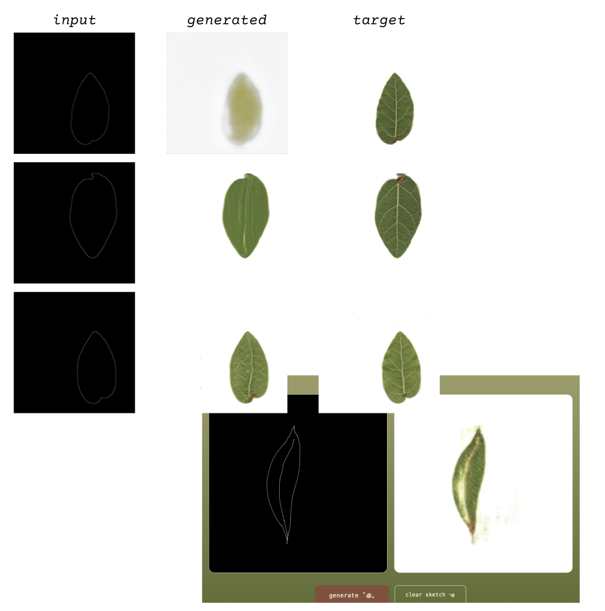
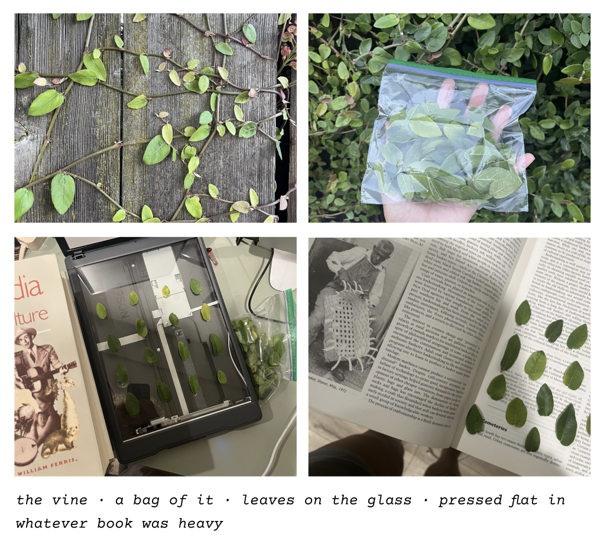

Carey J. Flack
Leaves in hand, I came into this project with a simple question: what does it take to teach a machine to see what we overlook? And what can teaching a machine, in turn, teach me about life around us?


I'm a hobby ecologist, so I'm naturally drawn to the small. For this project, I chose to investigate the vein networks in a leaf — they're vital to life on earth and almost entirely unseen, similar to an ML model's own inputs. I chose the creeping fig (Ficus pumila) as my subject; a little vine that eats fences. It's invasive here in California, so harvesting hundreds of leaves to experiment and troubleshoot felt less harmful to the ecosystem. I flattened them, laid them on the scanner glass a handful at a time, and scanned every single one before pressing them in a book. This took 10+ hours across many days. I came to appreciate what it takes to gather ML data.